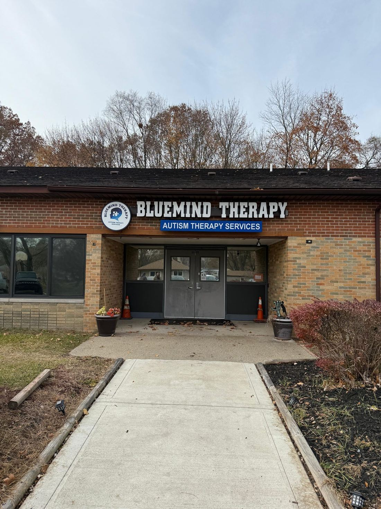
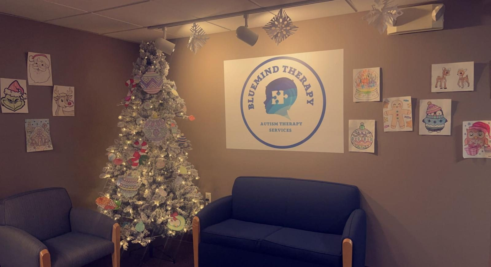
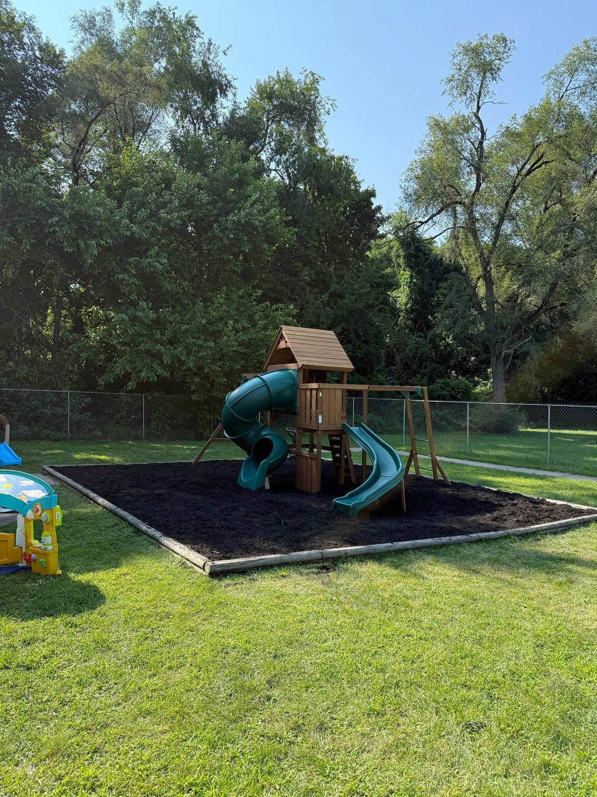
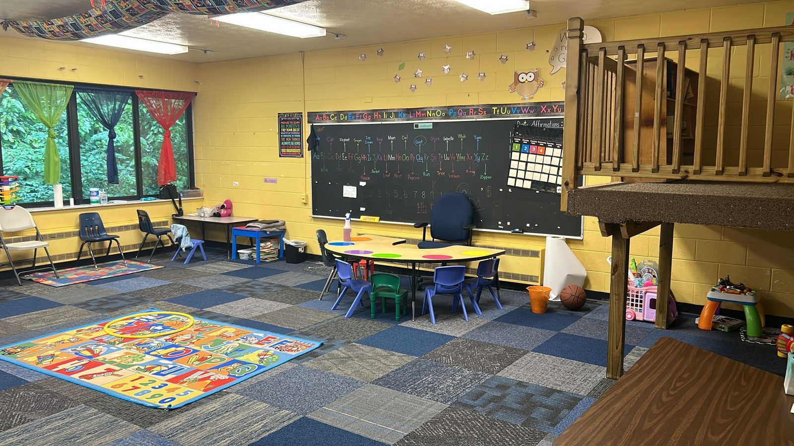
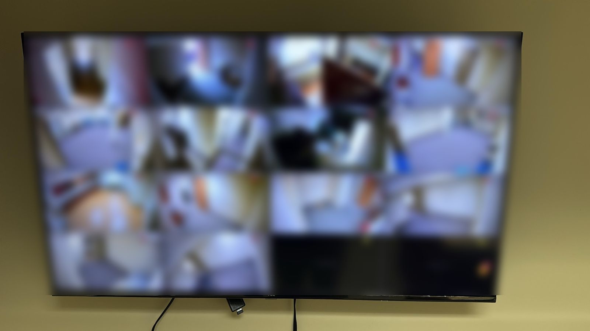

Washtenaw County
ABA therapy in Ypsilanti, Michigan
One-on-one Applied Behavior Analysis therapy for children and teens with autism, from 12 months to 18 years, at our Ypsilanti center and at home, at school and in the community across Washtenaw County.

Visit us
BlueMind Therapy Ypsilanti
1122 Walnut StreetYpsilanti, MI 48198
The center is on Walnut Street in Ypsilanti. Look for the BlueMind Therapy sign on the building.
| Monday to Friday | 8:00 am to 8:00 pm |
| Saturday | 8:00 am to 3:00 pm |
| Sunday | Closed |
- Free parking
- Interpreter services arranged on request
- Tours for families considering BlueMind



Where we serve
Families come to the center in Ypsilanti. In-home, school and community sessions are scheduled from this center across Washtenaw County, including Ann Arbor, Ypsilanti Township, Superior Township, Pittsfield Township, Saline and Milan.
Insurance
Medicaid through Washtenaw County Community Mental Health, Blue Cross Blue Shield of Michigan, HAP and UnitedHealthcare, and private pay. For Medicaid members we bill the county program directly.
What we offer here
Assessment by a BCBA, one-on-one ABA therapy, parent training, and coordination with your child's school. See all services.
Safe by design
The same protections at every center

Cameras record every room, 24 hours a day
Cámaras graban cada sala las 24 horas
Locked doors. Only staff and checked-in families enter
Puertas con cerradura. Solo entran el personal y las familias registradas
Every team member passes background checks
Todo el personal pasa verificación de antecedentes
A BCBA supervises every child's program
Un BCBA supervisa el programa de cada niño
Ypsilanti
Questions families in Washtenaw County ask
Where is the BlueMind Therapy center in Ypsilanti?
1122 Walnut Street, Ypsilanti, MI 48198. The center is on Walnut Street in Ypsilanti. Look for the BlueMind Therapy sign on the building. Parking is free.
What insurance does the Ypsilanti center take?
Medicaid through Washtenaw County Community Mental Health, Blue Cross Blue Shield of Michigan, HAP and UnitedHealthcare, and private pay. Call (734) 252-5215 and we will check your plan with you.
What ages do you work with?
Children and teens from 12 months to 18 years with an autism spectrum diagnosis.
What are the hours at the Ypsilanti center?
Monday to Friday 8:00 am to 8:00 pm; Saturday 8:00 am to 3:00 pm; Sunday Closed.
Do you come to our home or school?
Yes. In-home, school and community sessions are scheduled from this center across Washtenaw County.
How do we get started?
Send a referral online or call (734) 252-5215. Our intake team calls the parent or guardian within two business days, confirms the diagnosis and insurance, and requests authorization. Then a BCBA schedules the assessment.
Our other centers